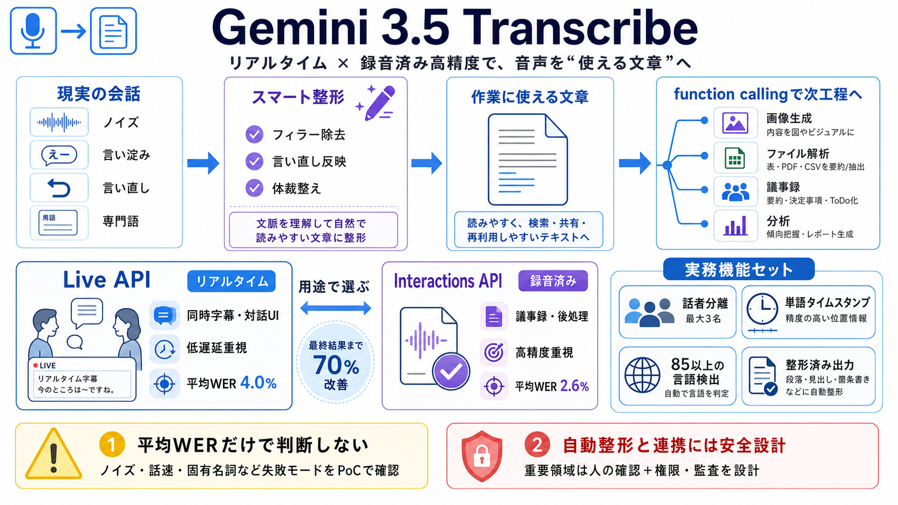

Introducing Gemini 3.5 Transcribe - The Keyword
Gemini 3.5 Transcribe’s performance represents a major advancement from our previous transcription model, Chirp 3, offer…

Gemini 3.5 Transcribe’s performance represents a major advancement from our previous transcription model, Chirp 3, offer…
through Google AI Studio, Google Antigravity, and the Gemini Enterprise Agent Platform preview. Google reports word erro…
00:00 5:05 PM · Aug 26, 202613.5KViews user avatar Philipp Schmid Google AI Studio @\_philschmid [...] Today…
Gemini API Gemini API # Live transcription with Gemini Live API The Gemini Live API supports low-latency, real-time sp…
## Performance Gemini 3.5 Transcribe’s performance represents a major advancement from our previous transcription model…